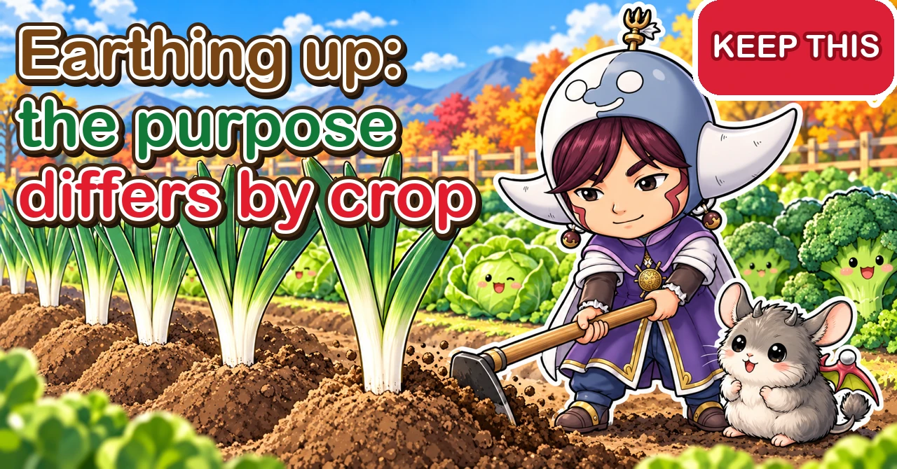

Earthing up 🌱 The purpose differs with every crop

🌱 "I dug up my potatoes and some of them had gone green."
🌱 "My leeks turned out nearly all green, with only a short white part."
🌱 "After the storm, my broccoli was lying flat, roots and all."
Hello, I'm Eiko. Eight years of growing vegetables organically and without pesticides, and a teaching licence in science.
Many of these failures can be prevented by how and when you earth up. Drawing soil up round the base of a plant is a simple job — but why you do it, when, and how many times varies a lot from crop to crop. This article covers the purposes and the basic method, what to do under plastic mulch, timings for each crop, and common mistakes.
Where you are: earthing up is called "hilling" in North America; it's the same job. Japanese gardeners do it with a narrow hoe called a tachi-gama, but a draw hoe, a hand trowel or your hands work fine. The leeks here are Japanese long white onions (naganegi), blanched like European leeks. Timings are for central Japan; shift them to match your own planting dates.
The essentials: earth up on a fine day when the soil is moist but not wet; scatter any side dressing in a ring a little way from the plant first and cover it with the soil you draw up; take soil from the path or the shoulder of the bed, never by digging deep beside the plant; build up gradually rather than all at once; and with leeks, never bury the point where the leaves divide.
① Why earth up, and when
Six purposes
- Support: a firmer base, less likely to blow over or topple under its own weight
- Shade: stops tubers pushing to the surface and turning green in the light
- Blanching: keeps light off leek stems so they grow long and white
- Working in fertiliser: covers a side dressing so it works in the soil
- Weed control: buries weeds just starting at the base
- Drainage: a raised base sheds rainwater instead of sitting in it
Crop by crop at a glance
- Potatoes: once after thinning the shoots, again 2–3 weeks later. Prevents greening and gives tubers room to form
- Leeks: about three times, following the growth of the white part. Lengthens the white
- Taro: twice, with the side dressings. Prevents greening and helps the corms swell
- Ginger: with the side dressings. Stops new rhizomes greening at the surface
- Peanuts: lightly with the side dressing, then again when flower stalks start pushing into the soil
- Cabbage, broccoli, Chinese cabbage: once, 2–3 weeks after planting, with the first side dressing. Stops wobbling and toppling

What this diagram says （図解の文字）
- Why earth up, crop by crop
- "Potatoes: keep the tubers out of the light" ／ "Leeks: lengthen the white part"
- "Taro: help the corms swell" ／ "Peanuts: help the stalks push in"
- "Cabbage, broccoli: stop them toppling" ／ "Work in the side dressing"
- "On a fine day, when the soil is nicely dry"
② The basic method
1. Check the weather and the soil
Choose a fine day when the soil is moist but not wet. Wet soil after rain sets hard when you draw it up, shutting out air. Bone-dry soil runs through your fingers and won't hold a shape. Just right: squeeze a handful and it holds lightly together, then crumbles when pressed.
2. Weed
Pull weeds round the base and where you'll take soil from. Small ones can simply be buried by the earthing up.
3. Scatter the side dressing
If you're feeding at the same time, put the fertiliser down first — not at the stem, but in a ring a little way out from the plant.
4. Draw soil from the path
With a hoe or trowel, scoop soil from the shoulder of the bed or the path and draw it towards the plant, covering the fertiliser as you go so it works slowly in the soil.
5. Work from both sides
Earthing up one side only can tilt the plant. Draw up roughly equal amounts from both sides.
6. Firm lightly
Settle the soil lightly with your hands or the back of the hoe. No need to tread it down. If leaves get in the way, hold them back with one hand.
Choosing tools
- A wide hoe: for drawing up soil over a large area
- A narrow hoe: for tight spaces between plants and right up to the stem
- A trowel: for containers or a few plants
- A spade: for big amounts, such as earthing up leeks for winter
③ Combining it with a side dressing
Ring the plant
Don't pile fertiliser at the stem: scatter it in a ring a little way out. Roots spread outwards from the base, and fertiliser near the root tips is taken up best.
Cover what you scatter
Fertiliser left on the surface washes away or works poorly. Covered with soil, it dissolves where the roots can reach it. No need to mix it in: soil on top is enough.
Which fertiliser
Home gardeners in Japan commonly use poultry manure, bokashi or a general granular fertiliser, at the rate on the bag. Go light on nitrogen for legumes such as edamame and peanuts.
Water if it's dry
Fertiliser dissolves slowly in dry soil, so it's slow to act. If the soil is dry, water after feeding and earthing up so it settles in sooner.
④ Cautions
Don't damage the roots
Digging deep right next to the plant cuts roots. Take soil from further out — the path or the shoulder of the bed. Cutting roots every time you earth up weakens the plant.
Don't bury the growing point
Burying the centre where new leaves come from stunts growth. With leeks especially, never bury the point where the leaves divide.
Don't pile it all on at once
A tall heap all at once can keep the base damp or slump. Build it up gradually over several goes.
Don't work wet soil
Earthing up wet soil after rain packs it and shuts out air round the roots. Wait for a fine day when it has dried a little.
⑤ Weeding at the same time
Catch weeds small
Small weeds at the base can simply be buried as you earth up. Left to grow, they root in and pulling them can tear the crop's roots too. Treat earthing-up time as weeding time and do both at once.
Without mulch, earthing up is weed control
When growing peanuts and the like without mulch, drawing soil up buries seedling weeds and keeps them down. On an unmulched plot it's an important part of weed control.
Weeds in mulch planting holes
Even under mulch, the planting holes are bare soil and weeds come through. Pull those when you side dress.
⑥ Things to check while you're there
Dead leaves
Leeks and taro collect dead old leaves at the base. Clear them before earthing up for better airflow and less disease.
Pests
- Taro: big caterpillars (hawk-moth larvae) may eat the large leaves. Check underneath and remove any you find
- Leeks: remove small black aphids early. White streaks or dots on leaves are usually leaf miners, which do little harm to leeks
Drainage
As you work, note any spots where water collects round the bed. For crops like ginger that get disease in standing water, cut a channel to let it drain.
⑦ Under plastic mulch
You can't earth up over mulch
With black plastic mulch you can't draw soil up to the plant: soil piled on top of the plastic isn't connected to the soil round the roots. Decide on one of these two approaches.
A. Remove the mulch, then earth up
With taro, for example, you can use mulch early on to warm the soil, suppress weeds and hold moisture, then take it off when it's time to side dress and earth up. Pulling mulch away from the edges can damage stems and leaves, so cut it down the middle with scissors and lift it off.
B. Keep the mulch and don't earth up
Taro can be grown to harvest under mulch without earthing up. Side dress by cutting holes in the mulch with a trowel about 20 cm (8 in) from the plant and putting the fertiliser in.
Potatoes under mulch
Cut holes where shoots come up and let them through. The mulch blocks light instead of earthing up — but light can get in round the holes and green the tubers, so pile a little soil round each hole to be safe.
Ginger
Ginger is sometimes grown with the mulch left on to keep the soil moist. Then put soil into the planting hole round the base.
⑧ Potatoes
Why
Potato tubers form on underground stems growing from the part of the plant above the seed potato. As they swell they can push to the surface and turn green in the light. Green tubers are poorer and the green parts taste harsh, so earth up to keep them covered. A thicker layer of soil also gives more room for tubers to form.
Thin the shoots first
When shoots are about 10 cm (4 in) tall, thin them to the best two or three. Hold the soil down firmly at the base as you pull, so you don't pull up the seed potato too. Then side dress and earth up for the first time.
First and second time
- First: after thinning and feeding. Draw soil lightly to the base
- Second: 2–3 weeks later, as the plants grow. Earth up properly
Don't bury it all at once
Piling soil high over small shoots and burying the stems completely sets them back. Add soil gradually as they grow: first at about 15 cm (6 in), again when bigger, and a third time if needed.
Watch for late frost when shoots emerge
A sudden frost can kill newly emerged spring potato shoots overnight, and waiting for new ones costs a lot of growth. In central Japan, a layer of fleece over the shoots until mid-April is reassuring; use your own last-frost date.
Shoots bulging under unholed mulch
If you laid mulch without holes, emerging shoots push it up into bumps. When you see one, tear the mulch with your finger and let the shoot out. Left under the plastic, it will steam and rot.
Autumn potatoes
In regions that grow a second, autumn crop, thin the shoots once they're all up, then side dress and earth up — lightly the first time, properly once the plants have grown.
⑨ Leeks
Why
The white part of a leek grows white because it's buried and kept from light. Without earthing up, you get a mostly green leek with a short white part.
When and how often
When about 10 cm (4 in) of white stem shows, draw soil up to cover it. Repeat about three times before harvest as it grows. Plants are stressed in midsummer heat, so go easy then and earth up in earnest once it cools. Around November, a final earthing up finishes the white part.
Never bury where the leaves divide
The single most important rule: don't bury the point where the leaves fan out. Bury it and growth slows or stops. Cover only up to the white part.
Feed first
Side dress before each earthing up: scatter fertiliser along both sides of the row, then draw soil over it. About three feeds from planting to harvest is enough.
Clear dead leaves first
Remove dead old leaves from the base before earthing up — whatever comes away easily. It improves airflow and helps prevent disease.
Leeks for winter
Leeks left in the ground over winter get soil drawn up higher than usual, to protect them from freezing. Repeated earthing up makes the ridge crumble, so press it with the hoe or spade as you go.
Leeks that need less
Short, fat types such as Shimonita leeks grow fine with far less earthing up than long white leeks. Adjust to the type you grow.

What this diagram says （図解の文字）
- Earthing up potatoes and leeks
- "Potatoes": "Thinning shoots: hold the base down" ／ "First time: lightly, after thinning" ／ "Second time: so the tubers are covered"
- "Leeks": "Never bury where the leaves divide" ／ "About three times, following the white part" ／ "For winter, right up high"
- "Not all at once — build it up gradually"
⑩ Taro
Why
Taro's side corms form shallowly round the main corm. Without earthing up they can surface, turn green and taste harsh. A thick layer of soil helps them swell.
First time
At two or three true leaves, 20–30 cm (8–12 in) tall — around June in central Japan. Side dress and draw soil lightly to the base.
Second time
At five or six true leaves — mid-June to early July. Side dress again and earth up firmly, about 10 cm (4 in) deep.
Side shoots
Side shoots sometimes come up from the base as it grows. One option is to bury them as you earth up.
Watch for drying
Taro hates drying out. If the soil is dry after earthing up in a fine spell, water thoroughly.
⑪ Ginger
Why
As ginger grows, new rhizomes form near the surface. Exposed to light they turn green and lose quality. Earthing up keeps them covered, and helps the fertiliser work.
When
Give the first side dressing once the shoots are all up, and the second in mid to late July — by August at the latest. Earth up after each.
Combine it with drainage
Ginger is prone to rhizome rot after heavy summer rain. While earthing up, cut channels round the bed and keep it raised to improve drainage and help prevent disease.
⑫ Peanuts
Why
Peanuts are unusual: after flowering, a stalk grows down from the base of each flower, pushes into the soil, and the pod forms underground. Soft, mounded soil at the base lets those stalks push in easily, giving more pods. Earthing up also warms the soil, improves drainage and keeps weeds down.
First time
With the side dressing. The aim is just to mix fertiliser into the soil, so keep it light. Peanuts are legumes whose root bacteria fix nitrogen from the air, so go easy on nitrogen. Some growers scatter oyster-shell lime at this point.
Second time
When the plants are flowering and the stalks are starting to push into the soil, draw soil up to the base again. If the leaves are lush from fertiliser left by the previous crop, skip the second feed.
⑬ Cabbage, broccoli and Chinese cabbage
Why
As the plants grow, the base starts to wobble. Broccoli in particular forms a big flower head on top and becomes top-heavy. Earthing up steadies the base so storms don't flatten them.
Feed first, then earth up
Autumn-planted cabbage and broccoli spread their leaves rapidly about two weeks after planting. Feed late at this stage and the leaves stay small, and cabbages heart up and broccoli heads form later. Feed, then earth up to cover the fertiliser — in that order.
When
Two to three weeks after planting, with the first side dressing. Scatter fertiliser in a ring a little way out, and draw soil over it towards the base.
Firm the base well
If the leaves are spreading, hold them back with your hand so soil covers the base properly, then firm lightly. If you're late and the plant already wobbles, add a short stake.

What this diagram says （図解の文字）
- Earthing up crop by crop
- "Taro: remove the mulch, twice" ／ "Ginger: cut channels for drainage too"
- "Peanuts: lightly the first time" ／ "Cabbage: 2–3 weeks after planting"
- ✕ / ◯ "Take soil from the path. Don't dig deep beside the plant"
- "Scatter the side dressing, then cover it with soil"
⑭ Sweetcorn
Why
Sweetcorn grows tall and gets top-heavy once the cobs form, so it blows over easily. Earthing up steadies the base, and the buried part of the stem puts out bracing roots.
When
While plants are small, mound 2–3 cm (1 in) of soil at the base when you side dress. At about 50 cm (20 in) tall, earth up properly with the second side dressing.
Cut weeds, don't pull
Sweetcorn roots grow straight and deep. Yanking out a big weed at the base can tear them too. Cut large weeds off at ground level with scissors instead.
If it falls over
Sweetcorn often keeps growing after it's blown over. Better to leave it than to damage the roots forcing it upright. If you like, draw soil up to the base to reinforce it.
⑮ Edamame
When it's growing poorly
It's tempting to feed edamame that's growing poorly, but as a legume it makes leaves and few pods when given too much nitrogen. Earthing up is an alternative: the buried stem may put out new roots that help it along.
Preventing toppling
Edamame also gets top-heavy with a heavy crop of pods. Earth up the base by flowering time to be safe.
⑯ Sweet potatoes
If tubers are showing
From late summer into autumn, swelling sweet potatoes sometimes break the surface, and exposed parts lose quality. When you see one, cover it securely with soil. A little soil over the stems doesn't matter. If the vines make a hoe awkward, use your hands.
⑰ Radishes (daikon)
When the top wobbles
As daikon grow, the top of the root rises above the soil. After thinning, or if seedlings are leggy and wobbly, draw soil up to support them.
After lifting one of a pair
If you grow two per station and harvest one first, the hole it leaves exposes the other's root. Always fill the hole and cover the remaining radish.
With side dressings
When growing at closer spacing, two side dressings scattered along the shoulders of the bed and earthed up each time help them grow large.
⑱ Onions
If you planted onions without mulch, draw a little soil to the base when you side dress. Without mulch, winter cold and frost heave lift seedlings more easily, so keep the base firm. Onions planted through holed mulch don't need earthing up.
⑲ Crops that don't need much
Tomatoes, aubergines, peppers and cucumbers
Staked summer crops are held up by their supports, so no major earthing up is needed, and they're often grown under mulch. Without mulch, a light covering of soil over the side dressing is enough.
Leafy greens
Komatsuna, spinach and other greens grow quickly and stay small. At most, draw a little soil to the base if plants are unsteady after thinning.
Carrots
A carrot's shoulder can turn green if it pokes above the soil in the light. When shoulders show, draw a little soil over them for a cleaner-looking crop.
⑳ Timings (central Japan)
- Potatoes (spring): mid-April–May. First after thinning, second 2–3 weeks later
- Potatoes (autumn): late September–October. First after thinning, second once the plants have grown
- Taro: first around June, second mid-June to early July
- Ginger: when shoots are all up, and mid to late July
- Peanuts: first around June, second when flower stalks lengthen
- Leeks: about three times from late summer to November, following the white part
- Cabbage, broccoli, Chinese cabbage: once, 2–3 weeks after planting
㉑ Through the year (central Japan)
- March–April: spring potatoes up — thin and earth up the first time. Mound a little soil round young sweetcorn
- May: second earthing up for potatoes. Side dress peanuts and ginger once shoots are up
- June: first and second feed-and-earth-up for taro. First for peanuts. Second for sweetcorn. Earth up edamame
- July: second feed-and-earth-up for ginger (mid to late). Second for peanuts (as flower stalks lengthen)
- August–September: cover any sweet potatoes breaking the surface. Earth up autumn-planted cabbage, broccoli and Chinese cabbage 2–3 weeks after planting. Leeks in earnest once it cools
- September–October: thin and earth up autumn potatoes. Earth up leeks
- November: final earthing up for leeks; for overwintering leeks, draw soil up high
㉒ Where opinions differ
Does taro need earthing up?
Some say a big, well-built mound gives bigger corms; others say taro grown under mulch without earthing up does fine. Earthing up takes effort but prevents greening and helps the corms swell; mulch saves work and prevents drying. Choose by how often you can get to the plot and how much work you want to put in.
Easier ways with leeks
Leeks take a lot of repeated earthing up. Planting the seedlings at a slant is said to cut the work, and some grow fat leeks in deep containers without earthing up. For long, straight white leeks, ordinary earthing up is the reliable way.
How many times for potatoes?
Some say once is enough, others two or more. The aim is to keep tubers covered, so if you cover them whenever they start to show, the number doesn't matter.
Do potatoes need their shoots thinned?
Thinning to two or three shoots means fewer tubers per plant, but bigger and more even ones. Leave them all and you get more stems and more tubers, uneven in size but more in number — and no risk of damaging the shoots you keep. Thin for big, even potatoes; don't if you'd rather have lots.
How high should the soil go?
There's no single answer; it depends on the crop and the purpose. Potatoes and taro: until the tubers are covered. Leeks: until the white part is covered. Cabbage and broccoli: until the base no longer wobbles. Higher isn't better — just high enough to do the job.
㉓ Common mistakes
Burying the leek's leaf fork
Growth slows or stops. Cover only the white part.
Pulling up the seed potato while thinning shoots
Hold the soil down firmly at the base as you pull. If shoots won't come, cut them at ground level with scissors.
Forgetting to earth up and getting green potatoes
The green parts taste harsh, so peel them away thickly. Next time, earth up as soon as tubers show.
Digging deep right beside the plant
It cuts roots and weakens the plant. Take soil from the path or the shoulder of the bed.
Earthing up wet soil after rain
The soil sets hard and air can't get in. Wait for a fine day when it's dried a little.
Putting fertiliser right at the stem and covering it
Strong fertiliser touching the roots can burn them. Scatter it in a ring a little way out.
㉔ Questions people ask
Does earthing up always go with feeding?
For many crops, doing both together works the fertiliser in and saves a job. But sometimes you earth up without feeding — for example, drawing soil up round leeks for winter.
I don't have enough soil to draw up
Narrow paths leave little soil to work with. Leave wider paths when planting. If you're short, bringing soil from elsewhere is fine.
Do containers need earthing up?
In containers you top up with fresh compost instead. For potatoes, plant with the container only partly filled and add compost as they grow; that keeps the tubers from greening.
Do radishes or komatsuna need it?
If plants wobble after thinning, draw a little soil to the base to support them. No major earthing up is needed.
Can I mix fertiliser into the soil I draw up?
A little compost mixed in is fine. For fertiliser, it's safer to scatter it a little way from the plant and draw soil over it, so it doesn't touch the roots directly.
How is earthing up different from cultivating?
Cultivating (hoeing) means loosening the surface soil shallowly between rows and round plants: it lets air into crusted soil, improves drainage and stops weed seedlings. Earthing up is drawing that soil up to the base of the plant. The two are often done one after the other — loosen, then draw up.
Won't the base stay damp under all that soil?
It can if you pile it too high at once or use wet soil. Using nicely dry soil on a fine day, in several stages, it's rarely a problem — and clearing dead leaves first helps further.
I don't have a hoe
In a small plot or containers, a trowel or your hands are fine. For long beds, a hoe makes the job much easier.
Heavy rain washed my earthing up away
Once it's fine and the soil has dried a little, draw soil back up where it slumped. If tubers are showing, cover them straight away.
Won't buried stems rot?
For most vegetables, burying the lower stem is fine; some even root from it and grow sturdier. Just don't bury the growing centre, or the leaf fork of a leek.
How do I top up a container?
- At planting, fill the container to about 10 cm (4 in) below the rim
- As plants grow, add fresh potting compost round the base
- If feeding, scatter the fertiliser first and add compost over it
- Top up in several stages, to 2–3 cm (1 in) below the rim
Fill to the rim at the start and there's no room to add more later — leaving space is the trick.
Can leeks be grown without earthing up?
Yes: make holes 20–30 cm (8–12 in) deep with a stick or dibber and drop the seedlings in. The depth of the hole becomes the white part, grown underground with no earthing up. They won't be as long and straight as earthed-up leeks, but it's worth trying to save work.
🔬 The science: how earthing up works
Why light turns things green When light reaches plant tissue, it makes chlorophyll, the green pigment. Potato tubers and leek stems are both stem tissue, so they turn green in light. Kept in the dark underground, they make no chlorophyll and stay white. White leek stems and white potatoes are both the result of shading them with soil.
A potato is a stem, not a root A potato tuber isn't a swollen root but the swollen tip of an underground stem. These stems grow from the buried part of the plant above the seed potato. So a thicker layer of soil, burying more stem, gives more places for tubers to form. A tuber that breaks the surface behaves like the stem it is, and greens in the light.
Why a mound improves drainage Rain runs off the raised base towards the lower paths, so water doesn't pool round the roots and they don't sit waterlogged. A mound also has more surface facing the sun, so it warms faster — which is why earthing up peanuts is said to warm the soil.
Why earthed-up plants stand firmer Many crops put out new roots from the buried part of the stem, and more roots means a stronger anchor. The soil itself also braces the base from both sides, so wind rocks the plant less.
To sum up
- ✅ Earthing up supports, shades, blanches, works in fertiliser, smothers weeds and improves drainage
- ✅ Do it on a fine day when the soil is moist but not wet — never in wet soil
- ✅ Take soil from the path or the shoulder of the bed; don't dig deep beside the plant
- ✅ Potatoes: twice after thinning the shoots — hold the base down as you thin
- ✅ Leeks: about three times following the white part. Never bury the leaf fork
- ✅ Taro: twice with the side dressings, the second about 10 cm deep
- ✅ Under mulch: either remove it and earth up, or keep it and don't
- ✅ Sweetcorn, edamame, cabbage and broccoli: earth up the base against toppling. Cover sweet potatoes and carrots where they show
- ✅ Earthing up is a good moment to weed, clear dead leaves and check for pests too
Thank you for reading all the way to the end! Earthing up is one of the simplest jobs in the garden — all it takes is a hoe. Next time you side dress, scatter the fertiliser and then draw soil over it, in one go 🌱
Thank you for reading!